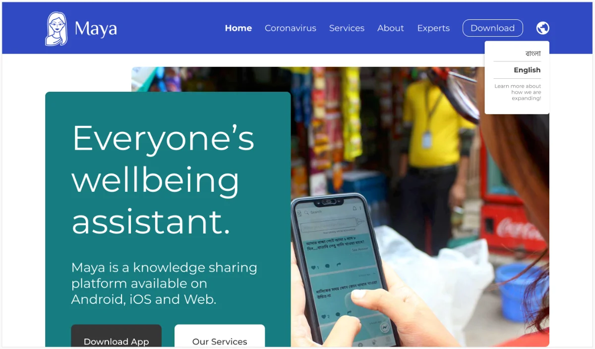
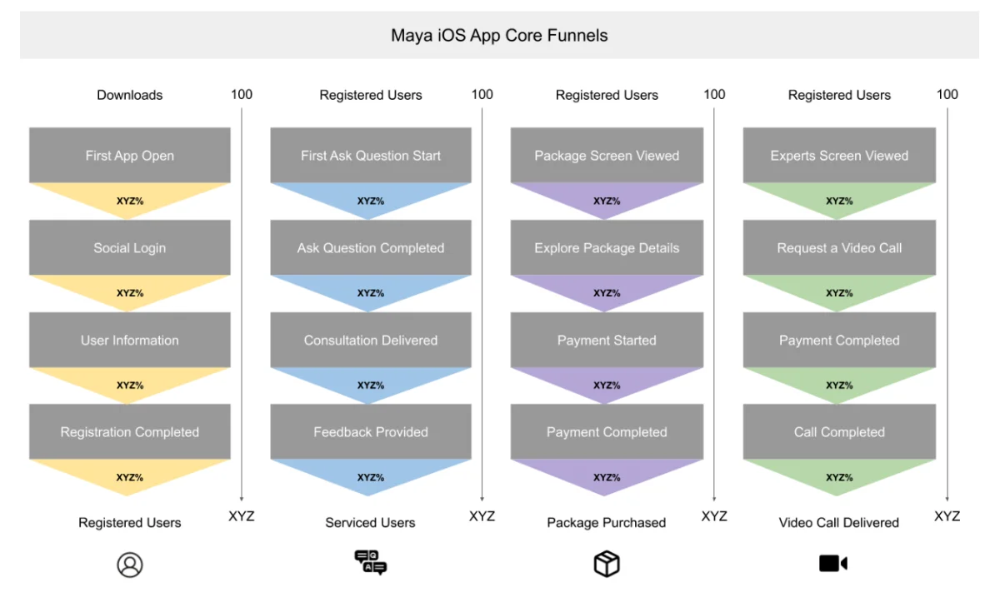
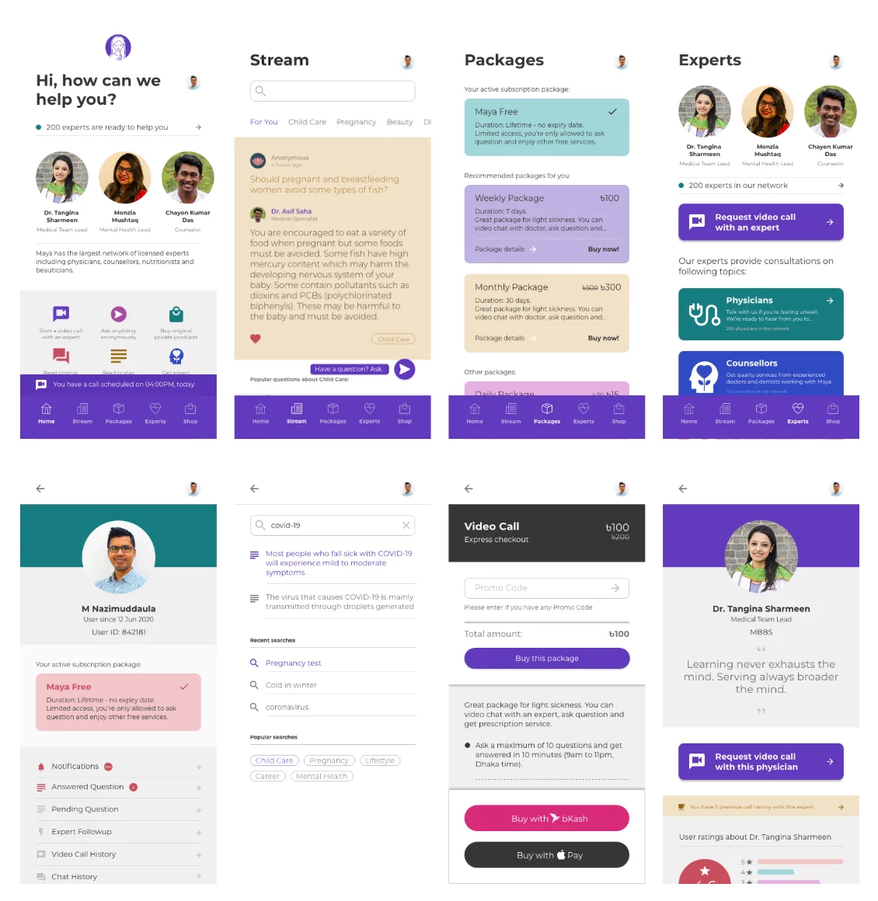

Maya is a Bangladesh-based technology company offering digital advisory on health, psychosocial, and legal issues. When I joined, it had grown to more than 3 million monthly active users, one of the most trusted platforms in the country for free, anonymous expert consultation. The goal was ambitious: to become everyone's personal digital wellbeing assistant across developing countries.
As CPO, my main focus was bringing discipline to how the team worked, building process where instinct had carried things before. Two major deliveries came out of that: a new company website, and Maya's first iOS app.
95% of Maya's traffic was mobile, local users seeking consultation services. The remaining 5%, mostly overseas desktop visitors, were investors and partners trying to evaluate Maya as a company. Small in volume, critical for raising investment and expanding reach.
I led a small team through a redesign built around a simple rule: show the right thing to the right audience. Using the fact that Maya's services were location-specific, we showed the company profile to regions where services weren't available, and kept the familiar interface for existing users. It let us serve both audiences without compromising either.
I also built the underlying structure needed to support this: a brand style guide, a responsive layout grid, and a content process pulling material from across the company for the first time. I designed every page myself, desktop and mobile.

A plain, simple structure to showcase the big picture. The homepage of the redesigned Maya website.
Maya's Android app had over a million downloads. iOS was untested territory, but investor pressure made it necessary. We had no iOS developer on the team, and I took it on anyway with a 90-day target, entirely remote.
I designed the key screens first to give the project a concrete target, brought in an external partner and developer I already trusted, and pulled one engineer to stay on standby for technical support. I ran delivery screen by screen, with daily team calls carrying most of the coordination weight that office proximity normally would have. Video calling through a third-party framework was new to us, so the whole team stayed in near-constant communication to keep pace.
We also built a proper measurement framework for the first time, mapping the full user journey step by step so we could see exactly where people dropped off, and use that to prioritize what to fix first.

The user flow mapped out to plan how we'd measure drop-off at every step.
The home screen carried over Maya's existing service categories, keeping the new iOS app immediately familiar to anyone coming from Android.

Every design here was meant to define a single interaction in the Maya iOS app.
Getting the app out the door meant a fair bit of back and forth with Apple's review process, and Covid slowed down plenty of things that would normally move faster, but we still landed the launch close to plan. It became part of Maya's international PR push shortly after, and fed directly into a funding pitch that closed not long after that.
Both projects asked for the same thing in different forms: less improvisation, more structure. The website needed discipline in how content and brand decisions got made. The iOS app needed discipline in how a distributed team stayed accountable to a hard deadline with a partner nobody else on the team had worked with before. That's the thread that connects them.